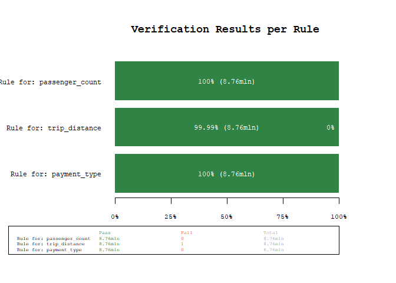

Introducing dataverifyr: A Lightweight, Flexible, and Fast Data Validation Package that Can Handle All Sizes of Data
In every data project, there should be a check that the data actually looks like what you expect it to look like.
This can be as simple as stopifnot(all(data$values > 0)), but as with everything “simple”, you typically want to have some additional features, such as cleaner error messages, rules separated from your R script (eg in a yaml file), result visualization, and last but least, a library that does this as fast as possible.
The last bit is especially important when you have the data in a database or as an arrow .parquet file, due to its size or complexity.
The newly released dataverifyr package (on CRAN) allows you to do exactly that: write rules in a yaml file, load the rules, check if the rules where matched and filter for data points that do not conform to the rules; all while respecting your data framework: data.table, dplyr, arrow, duckdb, or other DBI-compliant databases.
The following is an excerpt of the Readme of ´dataverifyr` that highlights how to use the package.
Larger Example using the arrow backend
For a more involved example, using a different backend, let’s say we have a larger dataset of taxi trips from NY (see also the official source of the data), that we have saved as a local arrow dataset (using parquet as a data format), where we want to make sure that some variables are in-line with our expectations/rules.
1 Download and Prepare Data
First we prepare the data by downloading it and writing the dataset to
.parquet files. This needs to be done only once and is shown for
reproducibility reasons only, the actual dataverifyr code is shown
below the next block
library(arrow)
url <- "https://d37ci6vzurychx.cloudfront.net/trip-data/yellow_tripdata_2018-01.parquet"
file <- "yellow_tripdata_2018-01.parquet"
if (!file.exists(file)) download.file(url, file, method = "curl")
file.size(file) / 1e6 # in MB
#> [1] 123.6685
# quick check of the filesize
d <- read_parquet(file)
dim(d)
#> [1] 8760687 19
names(d)
#> [1] "VendorID" "tpep_pickup_datetime" "tpep_dropoff_datetime" "passenger_count"
#> [5] "trip_distance" "RatecodeID" "store_and_fwd_flag" "PULocationID"
#> [9] "DOLocationID" "payment_type" "fare_amount" "extra"
#> [13] "mta_tax" "tip_amount" "tolls_amount" "improvement_surcharge"
#> [17] "total_amount" "congestion_surcharge" "airport_fee"
# write the dataset to disk
write_dataset(d, "nyc-taxi-data")2 Create Rules in yaml
Next, we can create some rules that we will use to check our data. As we
saw earlier, we can create the rules in R using the rule() and
ruleset() functions, there is however, the (in my opinion) preferred
option to separate the code from the rules by writing the rules in a
separate yaml file and reading them into R.
First we display the hand-written contents of the nyc_data_rules.yaml
file.
- name: 'Rule for: passenger_count'
expr: passenger_count >= 0 & passenger_count <= 10
allow_na: no
negate: no
index: 1
- name: 'Rule for: trip_distance'
expr: trip_distance >= 0 & trip_distance <= 1000
allow_na: no
negate: no
index: 2
- name: 'Rule for: payment_type'
expr: payment_type %in% c(0, 1, 2, 3, 4)
allow_na: no
negate: no
index: 3Then, we can load, display, and finally check the rules against the data
rules <- read_rules("nyc_data_rules.yaml")
rules
#> <Verification Ruleset with 3 elements>
#> [1] 'Rule for: passenger_count' matching `passenger_count >= 0 & passenger_count <= 10` (allow_na: FALSE)
#> [2] 'Rule for: trip_distance' matching `trip_distance >= 0 & trip_distance <= 1000` (allow_na: FALSE)
#> [3] 'Rule for: payment_type' matching `payment_type %in% c(0, 1, 2, 3, 4)` (allow_na: FALSE)3 Verify that the Data matches the given Rules
Now we can check if the data follows our rules or if we have unexpected data points:
# open the dataset
ds <- open_dataset("nyc-taxi-data/")
# perform the data validation check
res <- check_data(ds, rules)
res
#> # A tibble: 3 × 10
#> name expr allow…¹ negate tests pass fail warn error time
#> <chr> <chr> <lgl> <lgl> <int> <int> <int> <chr> <chr> <drt>
#> 1 Rule for: passenger_count passenger_count … FALSE FALSE 8760687 8760687 0 "" "" 0.56…
#> 2 Rule for: trip_distance trip_distance >=… FALSE FALSE 8760687 8760686 1 "" "" 0.43…
#> 3 Rule for: payment_type payment_type %in… FALSE FALSE 8760687 8760687 0 "" "" 0.42…
#> # … with abbreviated variable name ¹allow_na
plot_res(res)
Using the power of arrow, we were able to scan 8+mln observations for
three rules in about 1.5 seconds (YMMV). As we can see from the results,
there is one unexpected value, lets quickly investigate using the
filter_fails() function, which filters a dataset for the failed rule
matches
res |>
filter_fails(ds) |>
# only select a couple of variables for brevity
dplyr::select(tpep_pickup_datetime, tpep_dropoff_datetime, trip_distance)
#> # A tibble: 1 × 3
#> tpep_pickup_datetime tpep_dropoff_datetime trip_distance
#> <dttm> <dttm> <dbl>
#> 1 2018-01-30 12:41:02 2018-01-30 12:42:09 189484.As we can see, this is probably a data error (a trip distance of 190k miles in 1 minute seems - ehm stellar…).
Using a DBI Backend
If you have a SQLite or duckdb database, you can use the package
like this
library(DBI)
library(dplyr)
# connect to a duckdb database
con <- dbConnect(duckdb::duckdb("duckdb-database.duckdb"))
# for demo purposes write the data once
dbWriteTable(con, "mtcars", mtcars)
# create a tbl connection, which can be used in the checks
tbl <- tbl(con, "mtcars")
# create rules
rules <- ruleset(
rule(mpg > 10 & mpg < 30),
rule(cyl %in% c(4, 8)),
rule(vs %in% c(0, 1), allow_na = TRUE)
)
# check rules
res <- check_data(tbl, rules)
res
#> # A tibble: 3 × 10
#> name expr allow_na negate tests pass fail warn error time
#> <chr> <chr> <lgl> <lgl> <dbl> <dbl> <dbl> <chr> <chr> <drtn>
#> 1 Rule for: mpg mpg > 10 & mpg < 30 FALSE FALSE 32 28 4 "" "" 3.5227668 secs
#> 2 Rule for: cyl cyl %in% c(4, 8) FALSE FALSE 32 25 7 "" "" 0.2015200 secs
#> 3 Rule for: vs vs %in% c(0, 1) TRUE FALSE 32 32 0 "" "" 0.1898661 secs
filter_fails(res, tbl, per_rule = TRUE)
#> $`mpg > 10 & mpg < 30`
#> # A tibble: 4 × 11
#> mpg cyl disp hp drat wt qsec vs am gear carb
#> <dbl> <dbl> <dbl> <dbl> <dbl> <dbl> <dbl> <dbl> <dbl> <dbl> <dbl>
#> 1 32.4 4 78.7 66 4.08 2.2 19.47 1 1 4 1
#> 2 30.4 4 75.7 52 4.93 1.615 18.52 1 1 4 2
#> 3 33.9 4 71.1 65 4.22 1.835 19.9 1 1 4 1
#> 4 30.4 4 95.1 113 3.77 1.513 16.9 1 1 5 2
#>
#> $`cyl %in% c(4, 8)`
#> # A tibble: 7 × 11
#> mpg cyl disp hp drat wt qsec vs am gear carb
#> <dbl> <dbl> <dbl> <dbl> <dbl> <dbl> <dbl> <dbl> <dbl> <dbl> <dbl>
#> 1 21 6 160 110 3.9 2.62 16.46 0 1 4 4
#> 2 21 6 160 110 3.9 2.875 17.02 0 1 4 4
#> 3 21.4 6 258 110 3.08 3.215 19.44 1 0 3 1
#> 4 18.1 6 225 105 2.76 3.46 20.22 1 0 3 1
#> 5 19.2 6 167.6 123 3.92 3.44 18.3 1 0 4 4
#> 6 17.8 6 167.6 123 3.92 3.44 18.9 1 0 4 4
#> 7 19.7 6 145 175 3.62 2.77 15.5 0 1 5 6
# lastly disconnect from the database again
dbDisconnect(con, shutdown = TRUE)David Zimmermann, PhD
Data Scientist
I am an economist by training, turned programmer/data scientist who loves to program with R, Python, and C++.